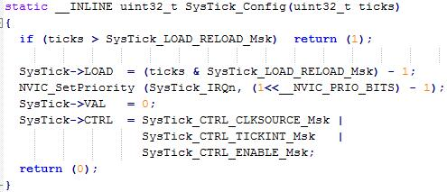

还记得之前所有关于stm32的文章中，需要延时的时候，都是使用这么一个函数来实现的：
void delay(u32 p_loop)
{
while(p_loop--);
}
但是这个函数到底会等多少时间呢？我不知道，也不关心，因为我之前的需求中并不需要多么精确的延时。可是如何才能比较精确的延时呢？比如我想写一个闪烁的LED，怎么才能每500ms暗或灭一次呢？
嗯，定时器！
几乎所有单片机都有定时器，定时器本质上就是一个计数器，每次收到一个脉冲信号时加一或减一，直到溢出或者到0，然后触发中断（如果允许中断的话）。
stm32有多个定时器，不过都比较复杂，功能超级强大，将在以后细细研究。今天要说的是系统滴答定时器，也就是SysTick，它是所有ARM Cortex-M3内核都包含的一个简单定时器。它是一个24位的计数器，值存放在STK_VAL寄存器中，只能递减。当STK_VAL的值递减到0时，保存在重载寄存器STK_LOAD中的值就会被复制到STK_VAL中，并触发中断。
由于SysTick比较简单，所以就先给代码，然后讲解（其实代码中的注释就已经够用了。。。）。
#include "stm32f10x_rcc.h"
#include "stm32f10x_gpio.h"
void gpio_init()
{
GPIO_InitTypeDef t_gpio;
//开启GPIOA的时钟
RCC_APB2PeriphClockCmd(RCC_APB2Periph_GPIOA,ENABLE);
//配置PA1为推挽输出
t_gpio.GPIO_Pin=GPIO_Pin_1;
t_gpio.GPIO_Mode=GPIO_Mode_Out_PP;
t_gpio.GPIO_Speed=GPIO_Speed_10MHz;
GPIO_Init(GPIOA,&t_gpio);
}
void systick_init()
{
//配置SysTick的重载计数器值为SystemCoreClock/1000，也就是72Mhz/1000=72000
//每次计数72000个脉冲，因为每个脉冲是1/72Mhz=1/72us，所以每72000*1/72us=1ms触发一次中断
SysTick_Config(SystemCoreClock/1000);
//暂时失能SysTick
SysTick->CTRL&=~SysTick_CTRL_ENABLE_Msk;
}
u32 g_timer;
void delay(u32 p_ms)
{
g_timer=p_ms;
//使能SysTick，让SysTick跑起来
SysTick->CTRL|=SysTick_CTRL_ENABLE_Msk;
//等待，直到g_timer减到0
while(g_timer);
}
//这个函数本应该在stm32f10x_it.c中，我把stm32f10x_it.c中的SysTick_Handler注释掉了，
//写在了这里，因为方便直接访问g_timer变量。
void SysTick_Handler(void)
{
if(g_timer)
g_timer--;
else
SysTick->CTRL&=~SysTick_CTRL_ENABLE_Msk;
}
int main()
{
gpio_init();
systick_init();
while(1)
{
GPIO_SetBits(GPIOA,GPIO_Pin_1);
delay(500);
GPIO_ResetBits(GPIOA,GPIO_Pin_1);
delay(500);
}
}
跟gpio有关的肯定不需要再多说了吧。
先来说说systick_init()这个函数。该函数内部先调用了SysTick_Config()这个函数。这个函数的实现如下：

也就是先设置STK_LOAD寄存器的值，然后将SysTick中断的优先级设置为最高，清空STK_VAL寄存器，设置STK_CTRL的值。对于STK_CTRL的设置需要解释一下。SysTick的设置只有三个控制位与一个标志位：
（1）第0位：使能位（ENABLE），为1时使能SysTick，为0时关闭SysTick；
（2）第1位：中断触发位（TICKINT），为1时，当STK_VAL减到0是会触发SysTick中断，为0时不触发中断；
（3）第2位：时钟源选择位（CLKSOURCE），为1时，SysTick的时钟源为AHB时钟，为0时为AHB时钟的八分频；
（4）第16位：计数为0标志位（COUNTFLAG），若STK_VAL递减至0，设置此标志位为1。
因此SysTick_Config()最后的设置是把SysTick设置为使能、触发中断、时钟源为AHB。
我向SysTick_Config()传入了SystemCoreClock/1000，而SystemCoreClock就是系统时钟的频率，也就是AHB的频率，即72Mhz。那么传入的值就是72000。而每个脉冲的周期是1/72Mhz=1/72us，所以每次中断间隔就是72000*1/72us=1000us=1ms。
delay()函数接收一个参数，也就是要延时的毫秒数。该函数先把参数赋值给全局变量g_timer，然后使能SysTick，忙等直到g_timer减到0为止。
SysTick的中断响应函数是SysTick_Handler(void)，该函数已经在库文件stm32f10x_it.c中实现了一个空函数，所以如果在main实现，链接时会报重定义的错误。所以我为了演示方便，把stm32f10x_it.c中的函数注释掉了，在main中实现。该中断函数内部非常简单：如果g_timer不为0，就把g_timer减1，否则关闭SysTick。
至此，整个代码讲解完了~
不过呢，如果深究，还有一个问题：为什么SysTick_Handler()不需要在NVIC中绑定呢？这是因为它是中断中的一类，叫做异常。异常是ARM内核事先规定好的，必须要响应的，不能通过程序修改。所以我们不能也没有必要手动在NVIC中注册。